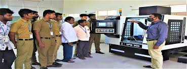
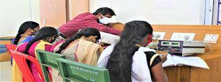
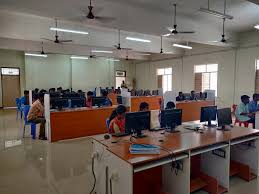
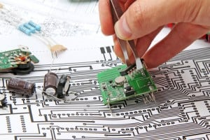
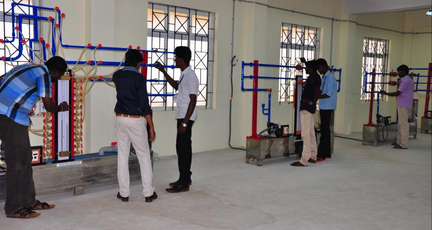

DEPARTMENTS
MECHANICAL ENGINEERING
overview of the department
Mechanical Engineering is one of the major activities in the engineering profession and its principles are involved in the design, study, development and construction of nearly all of the physical devices and systems to help the mankind. One of the founding departments of Government college of engineering(GCE)Sengipatti,Thanjavur the Mechanical Engineering Department has played a leading role in evolving an ‘Engineering Science’ based curriculum.
Today, the department of mechanical engineering of GCE attracts and features an extraordinary rich diversity and quantity of talented individuals, with nearly 500 Under Graduates full time students and over 20 faculty members.

Vision
To become one of the best mechanical engineering departments in the country within the next decade, in preparing engineers capable of working innovatively and creatively towards a better world.
Mission
Impart sound knowledge through effective teaching-learning methods.
Prepare students to address current and impending challenges facing the country
Create and nurture an environment for fostering innovation and research.
ELETRICAL COMMUNICATION ENGINEERING
overview of the department
Department of Electronics and Communication Engineering was started in the year 2013. Electronics and Communication Engineering (ECE) is a swiftly advancing field, with new ideas emerging every other second. From mobile phones to fiber optics and remote sensing, there are exciting avenues to explore and create. The Department has well qualified and highly motivated faculty and well equipped laboratories to cater the needs of the students. The equipments available in the laboratory are upgraded as an ongoing process so as to keep pace with the latest developments in the field of Electronics & Communication Engineering. Electronics and Communication Engineering (ECE) is a swiftly advancing field, with new ideas emerging every other second. From mobile phones to fibre optics and remote sensing, there are exciting avenues to explore and create.ical new advancements in technology to the society and industry for placing India on a higher growth trajectory.

Vision
Excellence in Theoretical and Experimental Research in Communications, Signal Processing, Microelectronics and RF/Photonics .and to produce globally competitive and socially sensitized Engineering graduates.
Mission
• Establish a unique learning environment to enable the students to face the challenges of the Electronics and Communication Engineering field.
• Promote the establishment of centres of excellence in niche technology areas to nurture the spirit of innovation and creativity among faculty and students.
• Provide ethical and value based education by promoting activities addressing the societal needs.
• Enable students to develop skills to solve complex technological problems of current times and also provide a framework for promoting collaborative and multidisciplinary activities.
COMPUTER SCIENCE ENGINEERING
overview of the department
The department aims to go beyond the fundamentals with the view to build an interest in students with quality interpersonal and professional skills. The department has started the journey in 2013 and offered Bachelor of Engineering (Under Graduate) in Computer Science and has a vibrant student body numbering above 200 and mostly supported by scholarships.
The department has well qualified,experienced and dedicative faculties from diverse streams and specialization Inculcating job oriented Knowledge based quality education through curriculum that reflects the depth of computer science. The students are provided with laboratories to develop their technical and software skills and all the software laboratories are internet connected to face global environment. The department works with student association to develop their skills to challenge their real world applications.

VISION
To be a prominent and renowned department recognized as competent Engineers in a myriad of application areas with research and innovation Ideas.
MISSION
To articulate the new ideas in the field of Computer Science and Engineering with software and problem solving skills, leadership qualities, team spirit.
To impact the ethical responsibilities, helping the students to contribute positively to the economic well being of our nation and to tackle the complex technological challenges of the future world.
ELETRICAL AND ELETRONICS ENGINEERING
Electrical Machines Lab
DC Shunt Generators, DC Series Generators, DC Compound Generators, DC Shunt Motors, DC Series Motor, DC Compound Motors, Single Phase Transformers, Single phase Induction motor, Three phase Induction motor, Synchronous motor.
Electronics Lab
The electronics lab provides the behavioural study of various electronics devices, integrated circuits of low power operation.
Digital Storage Oscilloscope, IC trainer kits, Collection of Analog and Digital measuring equipment.
Power Electronics and Drives Lab
Power electronics and drives lab has equipments like
Full and Half Wave Rectifier Modules, Single phase SCR based Fully Controlled Converters, Resonant DC-DC Converter Modules, Single/Three phase PWM Inverter Modules, SCR, TRIAC, MOSFET, IGBT Characteristics Modules, IGBT based Chopper Modules, CROs, Power Supplies, Voltage Commutation Chopper, Current Commutation Chopper, Series Inverter, Parallel Inverter, Three phase SCR Half and Fully Controlled Converter, Speed Controlled DC Shunt Motor using Fully Controlled Converter
MP AND MC
8085 MP kits, 8086 MP kits, 8051 Micro-Controller Kits, 8255 Interfacing Boards, 8253 Timer Counter,8279 Keyboard / Display Interface Boards

CIVIL ENGINEERING
overview of the department
Overview of the Department
The socio economy of India mainly depend on construction and infrastructure advancement of the nation, which is the major contributor to capital generation and employment. The built environment has a major influence on the quality of life of the society and on the economic prosperity of the nation.
Civil Engineering consists of various disciplines such as Structural Engineering, Environmental Engineering, Geotechnical Engineering, Transportation Engineering, Water Resources Engineering and Construction management. The combination of the disciplines imparts students with the knowledge of analysis and design of RC and steel structures, Highway Design, Solid Waste Management etc. which is necessary to succeed in today’s competitive construction world. Also, this programme prepares students to be successful in Civil Engineering practices and to be able to pursue masters in Structural Engineering, Environmental Engineering, Construction Management and Project Management.

vision and department
Vision
A collective hub where leading Civil Engineering research serves the needs of a broad array of disciplines and where innovations in other fields are applied to enrich Civil Engineering research and practice.
Mission
Provide knowledge and tools that enable Civil Engineering to evolve away from empirical adhoc approaches into strategies based on scientifically grounded analysis, using fundamental mechanics, integrating uncertainty, and navigating the conflicting objectives inherent in successful Civil Engineering design.